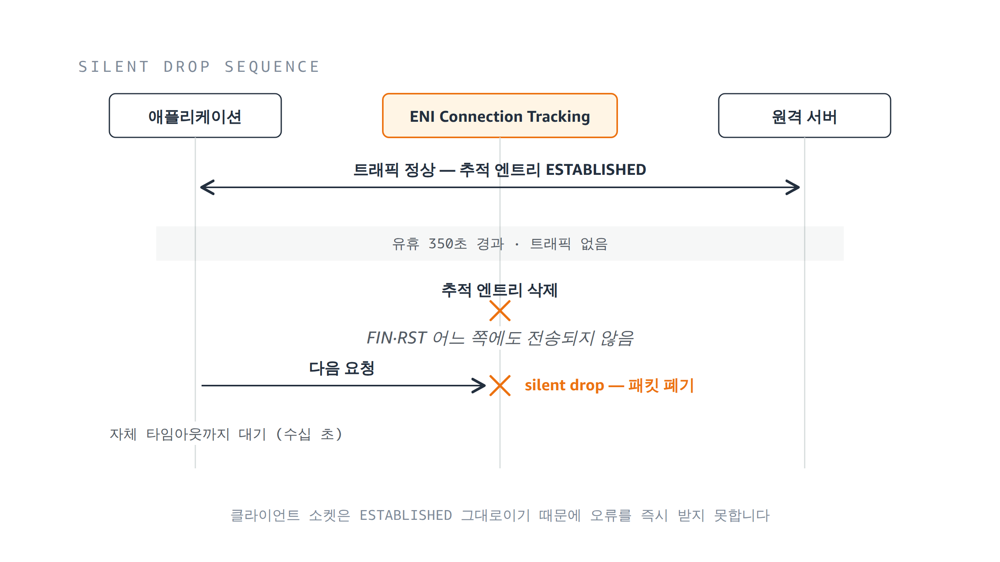
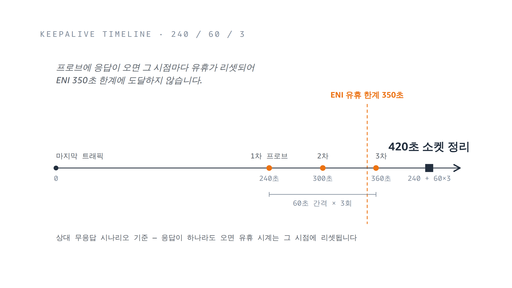
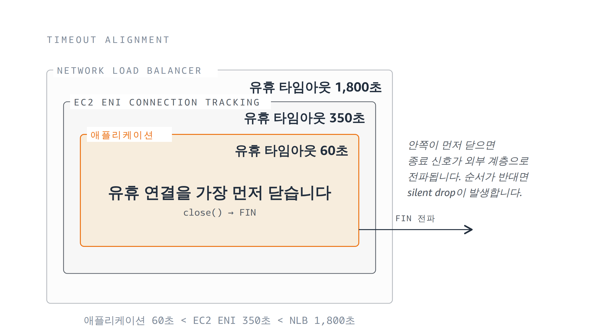

Nitro V6에서 Connection Tracking 유휴 타임아웃 기본값이 350초로 짧아지면 무엇이 달라지고 어떻게 대응해야 하는지 답합니다. 350초를 넘긴 유휴 연결은 FIN이나 RST 없이 silent drop으로 끊기므로 Connection Pool, 장기 세션, 자동으로 최신 세대를 선택하는 환경이 영향을 받습니다. SO_KEEPALIVE까지 포함해 TCP keepalive를 적용하고 스택 전체의 타임아웃을 정렬하면 Nitro 세대와 무관하게 해결됩니다.This post answers what changes when the default connection tracking idle timeout drops to 350 seconds on Nitro V6 and how to respond. Idle connections past 350 seconds are cut off by a silent drop with no FIN or RST, which affects connection pools, long-lived sessions, and environments that automatically select the latest generation. Applying TCP keepalive, including SO_KEEPALIVE, and aligning timeouts across the stack solves the problem regardless of Nitro generation.
주말 내내 트래픽이 없던 서비스에서 월요일 아침 첫 요청들만 유독 타임아웃으로 실패합니다. Karpenter가 노드를 교체한 뒤부터는 원인을 알 수 없는 연결 오류가 늘었는데, 부하 테스트를 아무리 돌려도 재현되지 않습니다. 최근 이런 증상을 겪었다면 애플리케이션 코드보다 먼저 확인할 것이 있습니다. 워크로드를 실행 중인 인스턴스 타입의 세대와 Nitro 버전입니다.
2025년 6월부터 Nitro V6 기반 인스턴스(m8i, r8i 등)가 출시되고 있습니다. 이 인스턴스에서는 보안 그룹(security group) Connection Tracking의 TCP established 유휴 타임아웃(idle timeout) 기본값이 432,000초(5일)에서 350초로 짧아졌습니다. Connection Tracking은 보안 그룹이 허용한 연결의 상태를 인스턴스 외부의 Nitro 계층에서 기억하는 기능입니다. 2026년 5월 AWS Networking & Content Delivery 블로그 Best Practices for TCP Connection Management on EC2에서 이 변경의 배경과 권장 대응을 정리해 발표했습니다. 이 글에서는 해당 블로그와 EC2 공식 문서를 기반으로 무엇이 변경되었는지, 어떤 워크로드가 어떻게 영향을 받는지, 그리고 TCP keepalive를 중심으로 어떤 준비를 하면 되는지 살펴봅니다.
01
변경된 것은 ENI(elastic network interface) 단위 설정인 TCP established 유휴 타임아웃의 기본값 하나입니다. API에서는 네트워크 인터페이스의 ConnectionTrackingSpecification에 포함된 TcpEstablishedTimeout 파라미터로 지정합니다. 60초에서 432,000초 사이로 조정하는 설정 범위는 예전 그대로이고 Nitro V6에서 기본값만 350초로 낮아졌습니다.
| 항목 | 값 |
|---|---|
| 설정 범위 | 60초 ~ 432,000초(5일) |
| 기본값: Nitro V6 | 350초 (P6e-GB200 제외) |
| 기본값: 그 외 전 세대 | 432,000초(5일), P6e-GB200 포함 |
| 설정 단위 | ENI |
| 설정 경로 | AWS CLI, 시작 템플릿, 콘솔, AWS CloudFormation, Terraform |
| AWS 권고 | 432,000초보다 작게 설정 |
표 1. TCP established 유휴 타임아웃 사양
P6e-GB200에는 350초 기본값이 적용되지 않고 다른 세대와 같은 432,000초가 유지됩니다. 다만 이 타입의 Nitro 버전 분류는 문서마다 상이합니다. Nitro 인스턴스 문서는 Nitro v5로 분류하고 Connection Tracking 문서는 Nitro V6의 350초 예외 타입으로 명시합니다. 표 1의 “제외” 표기는 Connection Tracking 문서를 따랐습니다. 분류가 어느 쪽이든 타임아웃 결론은 같습니다.
적용 대상을 판단할 때는 세대 번호와 Nitro 버전이 항상 일치하지는 않는다는 점에 주의해야 합니다. Graviton4 기반 8세대인 M8g, C8g, R8g는 Nitro v5이기 때문에 이번 변경의 영향을 받지 않고 9세대인 M9g, C9g는 Nitro v6이기 때문에 해당됩니다. 사용 중인 타입이 해당하는지는 Nitro 인스턴스 문서의 목록으로 확인합니다.
| 분류 | Nitro v6 인스턴스 타입 |
|---|---|
| 범용 | M8a, M8azn, M8gb, M8gn, M8i, M8id, M8i-flex, M8in, M8idn, M8ine, M8ib, M8idb, M9g, M9gd |
| 컴퓨팅 최적화 | C8a, C8gb, C8gn, C8i, C8id, C8i-flex, C8in, C8ine, C8ib, C9g, C9gd |
| 메모리 최적화 | R8a, R8gb, R8gn, R8i, R8id, R8i-flex, R8in, R8idn, R8ib, R8idb, X8aedz, X8i |
| 스토리지 최적화 | I8ge |
| 가속 컴퓨팅 | G7, G7e, P6-B200, P6-B300 |
| HPC | Hpc8a |
표 2. Nitro v6 가상화 인스턴스 타입 (Nitro 인스턴스 문서 기준)
베어메탈은 이 목록에서 -flex 계열과 M8ine, C8ine, 가속 컴퓨팅, HPC를 제외한 구성입니다. 혼동하기 쉬운 Nitro v5 타입은 M8g, M8gd, C7gn, C8g, C8gd, R8g, R8gd, X8g, I7ie, I8g, P5en, P6e-GB200, Trn2, Trn2u, Hpc7g입니다.
UDP 쪽은 원래부터 짧았습니다. 단방향이거나 요청과 응답 한 번으로 끝나는 흐름에 적용되는 UdpTimeout 기본값이 30초(최대 60초)이고 스트림으로 분류된 흐름에 적용되는 UdpStreamTimeout 기본값이 180초(최소 60초)입니다. 그래서 이번 변경의 대상이 아닙니다.
용어도 이해해야 합니다. 여기에서 말하는 Connection Tracking은 Nitro 계층에서 보안 그룹, VPC Flow Logs, 네트워크 미터링을 뒷받침하는 기능으로, 리눅스 커널의 conntrack과는 다른 계층입니다. 공교롭게도 커널 파라미터 nf_conntrack_tcp_timeout_established의 기본값 역시 432,000초라 혼동하기 쉽습니다. 하지만 이번에 변경된 곳은 커널과 무관한, ENI와 연관된 하이퍼바이저 계층입니다. 따라서 인스턴스 안에서 sysctl 값을 변경해도 타임아웃은 달라지지 않습니다.
02
Connection Tracking 할당량(allowance)은 인스턴스가 사용할 수 있는 Nitro 리소스에 따라 유한합니다. 기본값이 5일이던 시점에는 FIN이나 RST를 받지 못한 유휴 연결과 고아(orphaned) 연결이 추적 테이블에 최대 5일씩 남았습니다. 이것이 쌓여 할당량을 소진하면 기존 엔트리가 닫히거나 타임아웃될 때까지 인스턴스가 신규 연결을 수립하지 못합니다. 이때 나타나는 대표 증상은 connection timeout과 connection refused 오류, 백엔드 연결 수립 실패로 인한 로드 밸런서의 504 응답입니다. Network Load Balancer(NLB)의 TCP_ELB_Reset_Count 지표도 증가합니다.
UDP를 비롯한 non-TCP 흐름은 타임아웃이 30~180초로 짧아 대규모로 누적될 가능성이 낮습니다. 누적 리스크가 사실상 TCP established 상태에 몰려 있었고 이번 변경은 정확히 그 이슈를 완화하기 위함입니다. 결과적으로 유한한 추적 용량이 유휴 연결 대신 실제로 살아 있는 연결에 사용됩니다. 트래픽이 몰리는 순간에도 신규 연결 수립이 안정적으로 유지된다는 뜻입니다.
NLB, NAT 게이트웨이, Gateway Load Balancer는 이미 350초 유휴 타임아웃을 사용합니다. EC2 ENI에서만 5일이면 한쪽은 연결이 살아 있다고 믿고 다른 쪽은 이미 버린 half-open 상태가 생깁니다. 350초 기본값은 이런 계층 간 불일치를 줄이려는 선택입니다. 계층마다 같은 기준으로 유휴 연결이 정리되면 스택 전체의 동작을 예측할 수 있습니다. half-open 상태를 추적하는 디버깅 부담도 줄어듭니다.
참고로 ENI 단위로 타임아웃을 조정하는 기능 자체는 새로운 기능이 아닙니다. 2023년 11월에 구성 가능한 Connection Tracking 유휴 타임아웃이 도입되어 모든 Nitro 세대에서 60초부터 432,000초까지 설정할 수 있었습니다. 이번에 변경된 부분은 기능 그 자체보다는 V6의 기본값입니다.
03
타임아웃으로 Connection Tracking 엔트리가 삭제될 때 양쪽 어디에도 FIN이나 RST가 전달되지 않습니다. 클라이언트 소켓은 ESTABLISHED 상태로 남아 있고 다음 요청을 보내는 순간 패킷이 조용히 버려집니다. AWS 블로그에서는 이 현상을 silent drop이라고 부릅니다.

silent drop이 분석하기 어려운 것에는 이유가 있습니다. 애플리케이션이 즉시 오류를 받지 못하고 자체 타임아웃에 걸릴 때까지 멈춰 있으므로 요청 지연이 수십 초 단위로 치솟습니다. Connection Pool은 죽은 연결을 정상으로 판단해 계속 재사용합니다. 그래서 유휴 시간이 길었던 새벽이나 주말 직후의 첫 요청들이 집중적으로 실패하는 패턴이 나타납니다. 재현도 어렵습니다. 부하 테스트는 트래픽이 계속 발생하기 때문에 유휴 상태 자체가 만들어지지 않아 정상적인 재현만 나타납니다.
350초보다 긴 유휴 구간이 생기는 연결이라면 모두 점검 대상입니다.
maxIdleTime이 350초보다 크거나 설정돼 있지 않은 경우로, 가장 빈번하게 나타나는 사례입니다.이번 변경에서 가장 주의할 지점은 마이그레이션이 결정이 아니라 자동으로 일어난다는 사실입니다. AWS도 블로그에서 이 부분을 명시적으로 경고합니다. Karpenter나 속성 기반 인스턴스 유형 선택(attribute-based instance type selection)을 사용하는 EC2 Auto Scaling 그룹은 조건에 맞는 최신 세대를 자동으로 선택합니다. 아무 변경도 하지 않았는데 워크로드가 Nitro V6에 올라가고 첫 징후는 노드 리프레시나 스케일링 이벤트 뒤에 나타나는 원인 불명의 연결 실패입니다.
Amazon EKS 환경이라면 두 가지를 더 확인해야 합니다. Karpenter NodePool에 인스턴스 제약이 없으면 m8i 같은 Nitro V6 타입이 선택될 수 있습니다. 이때 karpenter.k8s.aws/instance-generation 같은 세대 제약만으로는 Nitro 버전을 통제할 수 없습니다. 9세대인 M9g는 Nitro v6이기 때문에 필터링되지 않고 Nitro v5인 M8g만 불필요하게 배제됩니다. 통제가 필요하면 인스턴스 패밀리 목록으로 지정합니다. 근본적인 대응 방법은 세대와 무관하게 동작하는 keepalive에 초점을 맞춥니다. 그리고 Amazon VPC CNI 기본 모드에서 파드(Pod)는 노드의 ENI를 공유하므로 노드 ENI의 타임아웃이 파드에 그대로 적용됩니다.
NLB 유휴 타임아웃을 1,800초로 늘려 두었는데 ENI가 350초라면 로드 밸런서가 연결을 유지하는 동안 EC2가 먼저 추적을 폐기합니다. 클라이언트 측면에서는 잘 되던 연결에 예상치 못한 문제가 일어날 수도 있습니다. ENI 타임아웃만 조정하는 대응은 이런 함정을 만듭니다. 스택 전체를 정렬하는 방법은 대응 방안에서 이어서 다룹니다.
04
우선순위 순으로 살펴봅니다. 1순위인 keepalive를 적용하면 나머지는 보완 수단이 되고 적용하지 않으면 나머지 수단만으로는 세대가 혼재된 환경의 이슈에 완벽하게 대응하기 어렵습니다.
keepalive는 유휴 연결에 주기적으로 프로브 패킷(Probe Packet)을 보내 연결이 어느 인프라 계층에서도 유휴 상태에 도달하지 않게 합니다. 타임아웃 값 자체를 무의미하게 만들기 때문에 EC2, 로드 밸런서, NAT 게이트웨이를 포함한 모든 계층에서 유효합니다. Nitro 세대가 섞여 있어도 동작이 달라지지 않습니다.
ENI 타임아웃이 350초라면 프로브(Probe)를 240초 이전에 시작하도록 설정해 여유를 확보합니다. 240초는 350초까지 110초를 남기는 값입니다. 상대 호스트가 이미 응답하지 않아 프로브가 전부 실패해도 240 + 60 × 3 = 420초면 소켓이 정리됩니다. 리눅스 커널의 keepalive 기본 시작 시간은 7,200초(2시간)로, 클라우드 인프라의 타임아웃을 제어하기에는 긴 시간입니다. 값 조정이 필수입니다.

# /etc/sysctl.conf
net.ipv4.tcp_keepalive_time = 240 # 4분 유휴 후 프로브 시작
net.ipv4.tcp_keepalive_intvl = 60 # 60초 간격으로 프로브
net.ipv4.tcp_keepalive_probes = 3 # 3회 실패 시 연결 종료여기서 가장 흔히 놓치는 함정이 SO_KEEPALIVE입니다. 위 sysctl은 프로브 간격을 정할 뿐이고 소켓별로 SO_KEEPALIVE가 활성화되어 있지 않으면 프로브가 전송되지 않습니다. 대부분의 OS에서 이 옵션의 소켓 기본값은 비활성입니다. sysctl만 넣고 keepalive 적용을 끝냈다고 판단하면 증상이 그대로 재발하므로 애플리케이션이나 드라이버 레벨에서 함께 활성화해야 합니다. 소켓을 직접 다루는 코드에서는 파이썬 기준으로 옵션을 아래와 같이 지정합니다.
import socket
# TCP_KEEPIDLE 계열 상수는 Linux 전용 (macOS는 TCP_KEEPALIVE, Windows에는 없음)
sock = socket.socket(socket.AF_INET, socket.SOCK_STREAM)
sock.setsockopt(socket.SOL_SOCKET, socket.SO_KEEPALIVE, 1)
sock.setsockopt(socket.IPPROTO_TCP, socket.TCP_KEEPIDLE, 240)
sock.setsockopt(socket.IPPROTO_TCP, socket.TCP_KEEPINTVL, 60)
sock.setsockopt(socket.IPPROTO_TCP, socket.TCP_KEEPCNT, 3)TCP_KEEPIDLE 계열 옵션까지 함께 넣으면 sysctl 기본값을 소켓 단위로 재정의할 수 있습니다.
주요 애플리케이션은 저마다 keepalive 설정 항목을 따로 둡니다.
| 대상 | 파라미터 |
|---|---|
| PostgreSQL | tcp_keepalives_idle, tcp_keepalives_interval, tcp_keepalives_count |
| Redis | tcp-keepalive |
| HTTP 클라이언트, 메시징 라이브러리 | 대부분 자체 keepalive 옵션 제공, 드라이버별 확인 필요 |
| Windows | HKLM\SYSTEM\CurrentControlSet\Services\Tcpip\Parameters의 KeepAliveTime, KeepAliveInterval |
표 3. 주요 애플리케이션의 keepalive 설정 항목
Redis의 tcp-keepalive 기본값은 300초이기 때문에 350초 내에 들어오지만 여유가 50초뿐입니다. 명시적으로 더 낮춰 두는 편이 안전합니다.
Amazon EKS에서는 파드의 securityContext.sysctls로 net.ipv4.tcp_keepalive_* 값을 지정합니다.
spec:
securityContext:
sysctls:
- name: net.ipv4.tcp_keepalive_time
value: "240"
- name: net.ipv4.tcp_keepalive_intvl
value: "60"
- name: net.ipv4.tcp_keepalive_probes
value: "3"이 sysctl들은 Kubernetes 1.29부터 safe sysctl로 승격되었기 때문에 1.29 미만 클러스터에서는 unsafe sysctl 허용 설정이 필요합니다. 버전과 무관하게 hostNetwork: true 파드에서는 net.ipv4 계열 sysctl 지정이 허용되지 않아 파드가 기동에 실패합니다. 두 경우 모두 노드 userData나 DaemonSet으로 노드 전체에 적용하는 방법이 해법입니다.
한 가지 한계도 알아 두면 좋습니다. TCP keepalive는 인프라의 타임아웃을 막아 주지만 원격 애플리케이션이 응답 불능에 빠진 상황은 TCP 연결이 온전해도 감지하지 못합니다. 그래서 많은 워크로드가 keepalive와 애플리케이션 레벨 HeartBeat를 함께 운영합니다.
keepalive를 적용할 수 없는 연결에 350초보다 긴 유휴가 필요하다면 기본값에 의존하지 말고 값을 명시합니다. AWS CLI에서는 ModifyNetworkInterfaceAttribute 작업으로 설정합니다.
aws ec2 modify-network-interface-attribute \
--network-interface-id eni-xxxxxxxx \
--connection-tracking-specification TcpEstablishedTimeout=3600시작 템플릿(launch template), 콘솔, AWS CloudFormation과 Terraform으로도 같은 값을 지정합니다. 신규 인스턴스에 적용하려면 시작 템플릿에 넣어야 하고 Karpenter와 Auto Scaling 그룹 경로도 마찬가지입니다. 다만 Karpenter의 EC2NodeClass에서 이 설정이 직접 노출되지 않을 수 있으니 사용 중인 버전의 지원 여부를 먼저 확인합니다. 지원되지 않으면 커스텀 시작 템플릿이나 keepalive 경로로 가는 방법이 확실합니다.
Connection Pool 설정을 함께 수정하면 타임아웃과의 충돌 자체가 줄어듭니다. maxIdleTime을 350초보다 짧게 잡고 maxLifetime으로 연결을 주기적으로 교체합니다. 사용 전에는 validation query나 health check로 살아 있는지 검증합니다. 풀 크기도 실제 동시성 요구에 맞게 줄입니다. 예를 들어 HikariCP에서는 두 값을 아래와 같이 설정합니다.
# HikariCP: 유휴 300초에 정리(350초보다 짧게), 30분마다 연결 교체
idleTimeout=300000
maxLifetime=1800000이름은 풀마다 달라서 MongoDB 드라이버는 maxIdleTimeMS, R2DBC 풀은 maxIdleTime처럼 해당 항목을 찾아 적용합니다.
원칙은 하나입니다. 연결은 keepalive가 있는 활성 상태이거나 닫힌 상태, 둘 중 하나여야 하고 무기한 유휴 상태로 두지 않습니다. 장시간 유휴가 예상되면 닫았다가 필요할 때 다시 엽니다.
AWS가 권고하는 구조는 애플리케이션이 가장 먼저 닫는 배치입니다. 예를 들어 NLB 1,800초, ENI 350초, 애플리케이션 60초처럼 안쪽 계층일수록 타임아웃이 짧으면 유휴 연결을 애플리케이션이 가장 먼저 닫습니다. 종료 신호(FIN)는 ENI와 로드 밸런서를 거쳐 외부 계층으로 전파됩니다. 어느 인프라 계층도 연결을 조용히 폐기하지 않게 됩니다. 순서가 반대면 silent drop이 발생합니다. Application Load Balancer(ALB) 뒤라면 기본 유휴 타임아웃이 60초라서 보통 ENI보다 먼저 연결이 정리됩니다. 다만 값을 늘려 잡았다면(최대 4,000초) ENI 350초와의 순서가 바뀌지 않는지 확인합니다.

그래서 아키텍처에 존재하는 모든 타임아웃 값을 문서화해 두는 것이 좋습니다. 애플리케이션, 로드 밸런서, NAT 게이트웨이, EC2 ENI가 대상입니다. 가장 신뢰할 수 있는 방법은 체인에서 가장 짧은 타임아웃보다 더 짧은 keepalive를 구현해 정렬 문제 자체를 피하는 것입니다.
반대로 타임아웃을 오히려 낮춰야 하는 경우도 있습니다. 공개 API나 데이터베이스 서버처럼 클라이언트 동작을 통제할 수 없는 서비스라면 ENI 타임아웃을 350초 기본값 또는 그 이하로 두는 편이 맞습니다. 유휴 클라이언트 연결이 누적되어 할당량을 소진하는 쪽이 더 위험하기 때문입니다.
05
ENA 드라이버가 노출하는 Connection Tracking 지표로 상태를 직접 확인할 수 있습니다. 인터페이스 이름이 AMI에 따라 eth0(Amazon Linux 2)이나 ens5(AL2023 등 예측 가능한 이름 체계)로 다르므로 이름부터 확인하고 실행합니다.
ip -br link # 인터페이스 이름 확인
ethtool -S eth0 | grep conntrack # 이름이 ens5라면 바꿔서 실행| 지표 | 의미 | 해석 |
|---|---|---|
conntrack_allowance_available | 남은 추적 용량 | 갑자기 수치가 크게 오르면 다수의 연결이 동시에 정리된 것으로, 타임아웃 이벤트의 신호입니다. |
conntrack_allowance_exceeded | 할당량 초과로 드롭된 패킷 수 | 스파이크는 신규 연결 실패가 진행 중이라는 뜻입니다. |
표 4. Connection Tracking 관련 ENA 지표
이 중 conntrack_allowance_available은 2023년에 추가된 네트워크 성능 지표라서 리눅스 ENA 드라이버 2.8.1 이상이 필요합니다. 오래된 AMI라면 ethtool -i eth0으로 드라이버 버전부터 확인하는 것을 권고합니다.
프로덕션에서는 CloudWatch 통합 에이전트(1.246396.0 이상) 설정에 ethtool 섹션을 추가해 두 지표를 게시합니다.
{
"metrics": {
"metrics_collected": {
"ethtool": {
"interface_include": ["eth0"],
"metrics_include": [
"conntrack_allowance_available",
"conntrack_allowance_exceeded"
]
}
}
}
}게시된 지표에는 ethtool_ 접두사가 추가됩니다. 그래프와 경보를 만들 때는 ethtool_conntrack_allowance_available이라는 이름으로 찾습니다. 인터페이스 이름이 ens5라면 interface_include 값도 여기에 맞춥니다. 여기에 더해 애플리케이션의 연결 오류와 재시도 횟수, Connection Pool 사용률과 지연, NLB의 TCP_ELB_Reset_Count를 함께 봅니다.
TCP_ELB_Reset_Count는 NLB가 생성한 RST 패킷 수를 집계하는 CloudWatch 지표이기 때문에 AWS CLI로 바로 조회합니다.
# --start-time의 date -d는 GNU 문법입니다. macOS·BSD에서는 date -u -v-1H 사용
aws cloudwatch get-metric-statistics \
--namespace AWS/NetworkELB \
--metric-name TCP_ELB_Reset_Count \
--dimensions Name=LoadBalancer,Value=net/my-nlb/xxxxxxxxxxxxxxxx \
--statistics Sum \
--period 300 \
--start-time "$(date -u -d '1 hour ago' +%Y-%m-%dT%H:%M:%SZ)" \
--end-time "$(date -u +%Y-%m-%dT%H:%M:%SZ)"이 값이 평소 수준을 넘어 계속 높아지면, 유휴 타임아웃을 넘긴 연결로 트래픽이 유입되고 있다는 신호이므로 keepalive 적용 상태와 타임아웃 정렬부터 점검합니다. 클라이언트와 타깃이 보낸 RST는 TCP_Client_Reset_Count, TCP_Target_Reset_Count로 구분해 확인합니다.
06
지금 어떤 일을 해야 하는지는 운영 중인 Nitro 세대에 따라 달라집니다.
| 상황 | 필요 조치 |
|---|---|
| Nitro V5 이하만 운영 | 즉시 조치는 필요 없습니다. V5는 기존 타임아웃 동작을 유지합니다. 다만 지금 keepalive를 넣어 두면 이후 마이그레이션해도 아무 일도 일어나지 않습니다. |
| V5와 V6 혼재 | 양쪽에 명시적 타임아웃을 설정하거나 keepalive를 적용해 기본값을 무관하게 만듭니다. 별도 노드풀 분리는 필요 없습니다. |
| V6 마이그레이션 예정, 자동 마이그레이션 가능 | keepalive(프로브 240초 이하)를 먼저 구현하고 적용할 수 없는 연결은 시작 템플릿에 명시적 ENI 타임아웃을 추가합니다. 이어서 애플리케이션, ENI, 로드 밸런서, NAT 게이트웨이의 정렬을 검증하고 카나리나 블루그린으로 점진 배포하며 연결 오류율을 모니터링합니다. |
표 5. 운영 상황별 권장 조치
07
지속 부하 테스트만으로는 이 문제가 재현되지 않습니다. 현실적인 유휴 구간을 포함한 테스트가 필요하고 아래 문제들은 수 시간을 운영해야 나타날 수 있습니다.
새 인스턴스 세대는 항상 대표성 있는 워크로드로 미리 테스트하고 카나리나 블루그린으로 점진 배포해 문제가 생기면 빠르게 롤백할 수 있게 준비합니다.
08
글머리의 세 가지 증상을 다시 살펴보겠습니다. 주말 직후 첫 요청이 집중 실패하는 것은 350초를 넘긴 유휴 연결이 silent drop으로 끊긴 뒤 Connection Pool이 죽은 연결을 재사용했기 때문입니다. 노드 교체 후에 시작된 연결 오류는 Karpenter나 속성 기반 선택이 워크로드를 Nitro V6로 마이그레이션하면서 기본값이 변경된 결과일 가능성이 높습니다. 부하 테스트에서 재현되지 않는 것도 자연스러운 일입니다. 트래픽이 계속 흐르면 유휴 상태가 만들어지지 않기 때문입니다.
350초 기본값은 Connection Tracking 고갈이라는 더 큰 장애를 막고 신규 연결 수립의 안정성을 지키기 위한 조정입니다. SO_KEEPALIVE까지 포함해 keepalive를 제대로 적용하면 Nitro 세대와 무관하게 해결됩니다. ENI 타임아웃을 5일로 되돌리는 대응은 원래의 할당량 고갈 문제를 다시 불러오므로 권장하지 않습니다.
복원력 있는 구성은 세 계층에서 함께 동작합니다. 애플리케이션 계층에서 TCP keepalive나 HeartBeat를 구현하고 인프라 계층에서 워크로드에 맞는 ENI 타임아웃을 설정하며 상위 로드 밸런서, NAT 게이트웨이와의 정렬을 검증합니다. 모니터링 계층에서는 conntrack_allowance_available과 conntrack_allowance_exceeded, 연결 오류율을 함께 추적합니다. 이렇게 준비해 두면 어떤 Nitro 세대, 어떤 인프라 계층에서도 애플리케이션이 동일하게 안정적으로 동작합니다.
A service that saw no traffic all weekend fails with timeouts on just the first requests on Monday morning. Ever since Karpenter replaced the nodes, unexplained connection errors have been on the rise, yet no amount of load testing reproduces them. If you have run into symptoms like these recently, there is something to check before your application code. It is the generation and Nitro version of the instance types running your workloads.
Nitro V6 based instances (m8i, r8i, and others) have been launching since June 2025. On these instances, the default TCP established idle timeout for security group connection tracking was shortened from 432,000 seconds (5 days) to 350 seconds. Connection tracking is the feature that remembers the state of connections allowed by a security group, in the Nitro layer outside the instance. In May 2026, the AWS Networking & Content Delivery Blog post Best Practices for TCP Connection Management on EC2 laid out the background of this change and the recommended response. Drawing on that post and the official EC2 documentation, this article looks at what changed, which workloads are affected and how, and how to prepare, with TCP keepalive at the center.
01
What changed is a single default value, the TCP established idle timeout, which is a setting applied per elastic network interface (ENI). In the API, you specify it with the TcpEstablishedTimeout parameter in the network interface's ConnectionTrackingSpecification. The configurable range of 60 to 432,000 seconds is the same as before, and only the default was lowered to 350 seconds on Nitro V6.
| Item | Value |
|---|---|
| Configurable range | 60 to 432,000 seconds (5 days) |
| Default: Nitro V6 | 350 seconds (except P6e-GB200) |
| Default: all other generations | 432,000 seconds (5 days), including P6e-GB200 |
| Configured per | ENI |
| How to configure | AWS CLI, launch templates, console, AWS CloudFormation, Terraform |
| AWS recommendation | Set a value lower than 432,000 seconds |
Table 1. TCP established idle timeout specifications
The 350-second default does not apply to P6e-GB200, which keeps the same 432,000 seconds as the other generations. The Nitro version classification of this type, however, differs between documents. The Nitro instances documentation classifies it as Nitro v5, while the connection tracking documentation lists it as a Nitro V6 type that is an exception to the 350-second default. The “except” notation in Table 1 follows the connection tracking documentation. Whichever classification is right, the conclusion about the timeout is the same.
When you determine what is in scope, keep in mind that the generation number and the Nitro version do not always match. The Graviton4-based eighth-generation M8g, C8g, and R8g are Nitro v5 and are not affected by this change, whereas the ninth-generation M9g and C9g are Nitro v6 and are affected. To see whether the types you use are in scope, check the list in the Nitro instances documentation.
| Category | Nitro v6 instance types |
|---|---|
| General purpose | M8a, M8azn, M8gb, M8gn, M8i, M8id, M8i-flex, M8in, M8idn, M8ine, M8ib, M8idb, M9g, M9gd |
| Compute optimized | C8a, C8gb, C8gn, C8i, C8id, C8i-flex, C8in, C8ine, C8ib, C9g, C9gd |
| Memory optimized | R8a, R8gb, R8gn, R8i, R8id, R8i-flex, R8in, R8idn, R8ib, R8idb, X8aedz, X8i |
| Storage optimized | I8ge |
| Accelerated computing | G7, G7e, P6-B200, P6-B300 |
| HPC | Hpc8a |
Table 2. Nitro v6 virtualized instance types (per the Nitro instances documentation)
The bare metal lineup is this list minus the -flex families, M8ine, C8ine, accelerated computing, and HPC. The Nitro v5 types that are easy to confuse are M8g, M8gd, C7gn, C8g, C8gd, R8g, R8gd, X8g, I7ie, I8g, P5en, P6e-GB200, Trn2, Trn2u, and Hpc7g.
UDP timeouts were short from the start. The default UdpTimeout, which applies to flows that are unidirectional or end after a single request and response, is 30 seconds (maximum 60 seconds), and the default UdpStreamTimeout, which applies to flows classified as streams, is 180 seconds (minimum 60 seconds). They are therefore not part of this change.
The terminology also needs to be understood. The connection tracking discussed here is the feature in the Nitro layer that underpins security groups, VPC Flow Logs, and network metering, and it sits at a different layer from the Linux kernel's conntrack. As it happens, the kernel parameter nf_conntrack_tcp_timeout_established also defaults to 432,000 seconds, which makes the two easy to confuse. But what changed this time is the hypervisor layer associated with the ENI, which has nothing to do with the kernel. Changing sysctl values inside the instance therefore does not change the timeout.
02
The connection tracking allowance is finite and depends on the Nitro resources available to the instance. When the default was 5 days, idle connections and orphaned connections that never received a FIN or RST stayed in the tracking table for up to 5 days. Once these pile up and exhaust the allowance, the instance cannot establish new connections until existing entries are closed or time out. The typical symptoms at that point are connection timeout and connection refused errors, and 504 responses from load balancers caused by failed backend connection establishment. The Network Load Balancer (NLB) TCP_ELB_Reset_Count metric also increases.
Non-TCP flows such as UDP have short timeouts of 30 to 180 seconds, so they are unlikely to accumulate at scale. The accumulation risk was concentrated almost entirely in the TCP established state, and this change is aimed precisely at mitigating that issue. As a result, the finite tracking capacity is used for connections that are actually alive instead of idle ones. That means new connection establishment stays stable even at the moment traffic surges.
NLB, NAT gateways, and Gateway Load Balancer already use a 350-second idle timeout. If only the EC2 ENI is at 5 days, you get a half-open state in which one side believes the connection is alive and the other has already discarded it. The 350-second default is a choice to reduce this kind of mismatch between layers. When every layer cleans up idle connections by the same standard, the behavior of the whole stack becomes predictable. The debugging burden of tracking down half-open states also shrinks.
For reference, the ability to adjust the timeout per ENI is not new. Configurable idle timeouts for connection tracking were introduced in November 2023, and any value from 60 to 432,000 seconds could be set on every Nitro generation. What changed this time is not the feature itself but the default on V6.
03
When a connection tracking entry is removed by the timeout, no FIN or RST is delivered to either side. The client socket remains in the ESTABLISHED state, and the moment it sends the next request, the packets are silently dropped. The AWS blog calls this a silent drop.
There are reasons silent drops are hard to analyze. The application does not get an error right away and hangs until its own timeout fires, so request latency spikes by tens of seconds. The connection pool treats the dead connection as healthy and keeps reusing it. That is why you see a pattern of concentrated failures on the first requests right after long idle periods, such as early morning or the weekend. It is also hard to reproduce. Because a load test generates traffic continuously, the idle state never forms, and the test shows only normal results.
Any connection that can sit idle for longer than 350 seconds needs to be reviewed.
maxIdleTime is greater than 350 seconds or not set at all, which is the most common case.The point that deserves the most attention in this change is that migration happens automatically, not as a decision. AWS explicitly warns about this in the blog as well. Karpenter, and EC2 Auto Scaling groups that use attribute-based instance type selection, automatically pick the latest generation that meets the requirements. Your workloads land on Nitro V6 even though you changed nothing, and the first sign is unexplained connection failures after a node refresh or a scaling event.
In an Amazon EKS environment, there are two more things to check. If a Karpenter NodePool has no instance constraints, Nitro V6 types such as m8i can be selected. A generation constraint such as karpenter.k8s.aws/instance-generation alone cannot control the Nitro version here. The ninth-generation M9g is Nitro v6, so it is not filtered out, and only M8g, which is Nitro v5, is excluded unnecessarily. If you need control, specify a list of instance families. The fundamental response focuses on keepalive, which works regardless of generation. In addition, in the default mode of the Amazon VPC CNI, Pods share the node's ENIs, so the node ENI timeout applies to Pods as is.
If you raised the NLB idle timeout to 1,800 seconds but the ENI is at 350 seconds, EC2 discards its tracking entry first while the load balancer still holds the connection. From the client's point of view, a connection that had been working fine can run into an unexpected problem. A response that adjusts only the ENI timeout creates this kind of trap. How to align the whole stack is covered next under mitigation options.
04
We go through them in order of priority. With keepalive, the first priority, in place, the rest become supplementary measures, and without it, it is hard to fully address the issue with the remaining measures alone in an environment where generations are mixed.
Keepalive periodically sends probe packets on idle connections so that a connection never reaches the idle state at any infrastructure layer. Because it makes the timeout value itself irrelevant, it is effective at every layer, including EC2, load balancers, and NAT gateways. Its behavior does not change even when Nitro generations are mixed.
With a 350-second ENI timeout, configure probes to start before 240 seconds to leave some margin. A value of 240 seconds leaves 110 seconds before the 350-second mark. Even if the peer host has already stopped responding and every probe fails, the socket is cleaned up at 240 + 60 × 3 = 420 seconds. The Linux kernel's default keepalive start time is 7,200 seconds (2 hours), which is too long to keep cloud infrastructure timeouts under control. Adjusting the values is a must.
# /etc/sysctl.conf
net.ipv4.tcp_keepalive_time = 240 # start probes after 4 minutes of idle time
net.ipv4.tcp_keepalive_intvl = 60 # probe every 60 seconds
net.ipv4.tcp_keepalive_probes = 3 # close the connection after 3 failed probesThe pitfall most often missed here is SO_KEEPALIVE. The sysctl settings above only define the probe intervals, and no probes are sent unless SO_KEEPALIVE is enabled on each socket. On most operating systems, this option is disabled by default on sockets. If you add only the sysctl settings and consider keepalive done, the symptoms come right back, so you must also enable it at the application or driver level. In code that works with sockets directly, the options are set as shown below, using Python as an example.
import socket
# The TCP_KEEPIDLE family of constants is Linux only (macOS uses TCP_KEEPALIVE, Windows has none)
sock = socket.socket(socket.AF_INET, socket.SOCK_STREAM)
sock.setsockopt(socket.SOL_SOCKET, socket.SO_KEEPALIVE, 1)
sock.setsockopt(socket.IPPROTO_TCP, socket.TCP_KEEPIDLE, 240)
sock.setsockopt(socket.IPPROTO_TCP, socket.TCP_KEEPINTVL, 60)
sock.setsockopt(socket.IPPROTO_TCP, socket.TCP_KEEPCNT, 3)Adding the TCP_KEEPIDLE family of options as well lets you override the sysctl defaults per socket.
Major applications each have their own keepalive settings.
| Target | Parameters |
|---|---|
| PostgreSQL | tcp_keepalives_idle, tcp_keepalives_interval, tcp_keepalives_count |
| Redis | tcp-keepalive |
| HTTP clients, messaging libraries | Most provide their own keepalive options, check per driver |
| Windows | HKLM\SYSTEM\CurrentControlSet\Services\Tcpip\Parameters: KeepAliveTime, KeepAliveInterval |
Table 3. Keepalive settings in major applications
The Redis tcp-keepalive default is 300 seconds, which falls within 350 seconds but leaves a margin of only 50 seconds. It is safer to explicitly set it lower.
On Amazon EKS, use the Pod's securityContext.sysctls to set the net.ipv4.tcp_keepalive_* values.
spec:
securityContext:
sysctls:
- name: net.ipv4.tcp_keepalive_time
value: "240"
- name: net.ipv4.tcp_keepalive_intvl
value: "60"
- name: net.ipv4.tcp_keepalive_probes
value: "3"These sysctls were promoted to safe sysctls in Kubernetes 1.29, so clusters older than 1.29 need the setting that allows unsafe sysctls. Regardless of version, Pods with hostNetwork: true are not allowed to set net.ipv4 sysctls, and the Pod fails to start. In both cases, the solution is to apply the values to the whole node through the node userData or a DaemonSet.
There is one limitation worth knowing. TCP keepalive prevents infrastructure timeouts, but it cannot detect a remote application that has become unresponsive while the TCP connection itself is intact. That is why many workloads run keepalive together with application-level heartbeats.
If a connection that cannot use keepalive needs to stay idle longer than 350 seconds, set the value explicitly instead of relying on the default. With the AWS CLI, you set it through the ModifyNetworkInterfaceAttribute action.
aws ec2 modify-network-interface-attribute \
--network-interface-id eni-xxxxxxxx \
--connection-tracking-specification TcpEstablishedTimeout=3600You can specify the same value with launch templates, the console, AWS CloudFormation, and Terraform. To apply it to new instances, it has to go into the launch template, and the same holds for the Karpenter and Auto Scaling group paths. Karpenter's EC2NodeClass may not expose this setting directly, however, so first check whether the version you use supports it. If it does not, a custom launch template or the keepalive route is the reliable way to go.
Revising your connection pool settings as well reduces conflicts with the timeout in the first place. Set maxIdleTime shorter than 350 seconds and rotate connections periodically with maxLifetime. Before use, verify that a connection is alive with a validation query or a health check. Reduce the pool size as well to match actual concurrency needs. In HikariCP, for example, the two values are set as shown below.
# HikariCP: retire idle connections at 300 seconds (shorter than 350 seconds), rotate connections every 30 minutes
idleTimeout=300000
maxLifetime=1800000The names differ from pool to pool, so find and apply the corresponding setting, such as maxIdleTimeMS for the MongoDB driver and maxIdleTime for R2DBC pools.
There is one principle. A connection must be in one of two states, active with keepalive or closed, and is never left idle indefinitely. If a long idle period is expected, close the connection and reopen it when needed.
The structure AWS recommends is an arrangement in which the application closes first. For example, with NLB at 1,800 seconds, the ENI at 350 seconds, and the application at 60 seconds, the timeout gets shorter toward the inner layers, so the application is the first to close an idle connection. The termination signal (FIN) propagates through the ENI and the load balancer to the outer layers. No infrastructure layer ends up silently discarding the connection. If the order is reversed, silent drops occur. Behind an Application Load Balancer (ALB), the default idle timeout is 60 seconds, so connections are usually cleaned up before the ENI timeout. If you have raised that value (up to 4,000 seconds), however, verify that its order relative to the 350-second ENI timeout has not flipped.
For this reason, it is a good idea to document every timeout value that exists in your architecture. That covers the application, load balancers, NAT gateways, and EC2 ENIs. The most reliable approach is to implement keepalive at an interval shorter than the shortest timeout in the chain, which avoids the alignment problem altogether.
Conversely, there are cases where you should lower the timeout instead. For services where you cannot control client behavior, such as public APIs or database servers, it makes sense to keep the ENI timeout at the 350-second default or lower. That is because idle client connections piling up and exhausting the allowance is the greater risk.
05
You can check the state directly with the connection tracking metrics that the ENA driver exposes. The interface name differs by AMI, either eth0 (Amazon Linux 2) or ens5 (AL2023 and others that use predictable naming), so check the name before you run the commands.
ip -br link # check the interface name
ethtool -S eth0 | grep conntrack # if the name is ens5, substitute it and run| Metric | Meaning | Interpretation |
|---|---|---|
conntrack_allowance_available | Remaining tracking capacity | A sudden large increase means many connections were cleaned up at once, which signals a timeout event. |
conntrack_allowance_exceeded | Number of packets dropped because the allowance was exceeded | A spike means new connection failures are in progress. |
Table 4. ENA metrics related to connection tracking
Of these, conntrack_allowance_available is a network performance metric added in 2023, so it requires Linux ENA driver 2.8.1 or later. On an older AMI, we recommend checking the driver version first with ethtool -i eth0.
In production, add an ethtool section to the configuration of the unified CloudWatch agent (1.246396.0 or later) to publish the two metrics.
{
"metrics": {
"metrics_collected": {
"ethtool": {
"interface_include": ["eth0"],
"metrics_include": [
"conntrack_allowance_available",
"conntrack_allowance_exceeded"
]
}
}
}
}Published metrics get the ethtool_ prefix. When you build graphs and alarms, look for the name ethtool_conntrack_allowance_available. If the interface name is ens5, set the interface_include value to match. On top of this, watch application connection errors and retry counts, connection pool utilization and latency, and the NLB TCP_ELB_Reset_Count together.
TCP_ELB_Reset_Count is a CloudWatch metric that counts the RST packets generated by the NLB, so you can query it directly with the AWS CLI.
# The date -d in --start-time is GNU syntax. On macOS and BSD, use date -u -v-1H
aws cloudwatch get-metric-statistics \
--namespace AWS/NetworkELB \
--metric-name TCP_ELB_Reset_Count \
--dimensions Name=LoadBalancer,Value=net/my-nlb/xxxxxxxxxxxxxxxx \
--statistics Sum \
--period 300 \
--start-time "$(date -u -d '1 hour ago' +%Y-%m-%dT%H:%M:%SZ)" \
--end-time "$(date -u +%Y-%m-%dT%H:%M:%SZ)"If this value keeps rising above its usual level, it is a sign that traffic is arriving on connections that have exceeded the idle timeout, so start by checking whether keepalive is applied and whether the timeouts are aligned. RSTs sent by clients and targets are tracked separately as TCP_Client_Reset_Count and TCP_Target_Reset_Count.
06
What you need to do now depends on the Nitro generations you operate.
| Situation | Required action |
|---|---|
| Running Nitro V5 or earlier only | No immediate action is needed. V5 keeps the existing timeout behavior. If you add keepalive now, however, nothing will happen when you migrate later. |
| Mix of V5 and V6 | Set explicit timeouts on both, or apply keepalive so that the default no longer matters. A separate node pool is not needed. |
| V6 migration planned, or automatic migration possible | Implement keepalive first (probes at 240 seconds or less), and for connections that cannot use it, add an explicit ENI timeout to the launch template. Then verify the alignment of the application, ENI, load balancers, and NAT gateways, and roll out gradually with canary or blue/green deployments while monitoring the connection error rate. |
Table 5. Recommended actions by operating situation
07
Sustained load testing alone does not reproduce this problem. You need tests that include realistic idle periods, and the problems below may surface only after hours of operation.
Always test a new instance generation in advance with a representative workload, and roll out gradually with canary or blue/green deployments so that you can roll back quickly if problems arise.
08
Let's look again at the three symptoms from the opening. The concentrated failures on the first requests right after the weekend happen because idle connections past 350 seconds were cut off by a silent drop and the connection pool then reused the dead connections. The connection errors that began after node replacement are most likely the result of the default changing as Karpenter or attribute-based selection migrated the workloads to Nitro V6. It is also natural that load tests do not reproduce the problem. When traffic keeps flowing, the idle state never forms.
The 350-second default is an adjustment made to prevent a bigger failure, connection tracking exhaustion, and to protect the stability of new connection establishment. When keepalive is applied properly, including SO_KEEPALIVE, the problem is solved regardless of Nitro generation. Reverting the ENI timeout to 5 days brings back the original allowance exhaustion problem, so it is not recommended.
A resilient setup works across three layers together. At the application layer, implement TCP keepalive or heartbeats, and at the infrastructure layer, set an ENI timeout that fits the workload and verify alignment with upstream load balancers and NAT gateways. At the monitoring layer, track conntrack_allowance_available and conntrack_allowance_exceeded together with the connection error rate. With this in place, your applications behave with the same stability on any Nitro generation and at any infrastructure layer.
| No. | 출처Source | 종류Kind | 확인한 날Checked |
|---|---|---|---|
| 1 | Best Practices for TCP Connection Management on EC2 - AWS Networking & Content Delivery 블로그 | AWS 블로그AWS blog | 2026-11-15 |
| 2 | Introducing configurable idle timeout for connection tracking - AWS Networking & Content Delivery 블로그 | AWS 블로그AWS blog | 2026-11-15 |
| 3 | Monitoring EC2 Connection Tracking utilization using a new network performance metric - AWS Networking & Content Delivery 블로그 | AWS 블로그AWS blog | 2026-11-15 |
| 4 | Security group connection tracking - Amazon EC2 사용 설명서 | 공식 문서AWS docs | 2026-11-15 |
| 5 | Modify network interface attributes - Amazon EC2 사용 설명서 | 공식 문서AWS docs | 2026-11-15 |
| 6 | Monitor network performance for ENA settings on your EC2 instance - Amazon EC2 사용 설명서 | 공식 문서AWS docs | 2026-11-15 |
| 7 | Instances built on the AWS Nitro System - Amazon EC2 인스턴스 유형 가이드 | 공식 문서AWS docs | 2026-11-15 |
| 8 | Collect network performance metrics - Amazon CloudWatch 사용 설명서 | 공식 문서AWS docs | 2026-11-15 |
| 9 | Using sysctls in a Kubernetes Cluster - Kubernetes 공식 문서 | 웹 문서Web | 2026-11-15 |